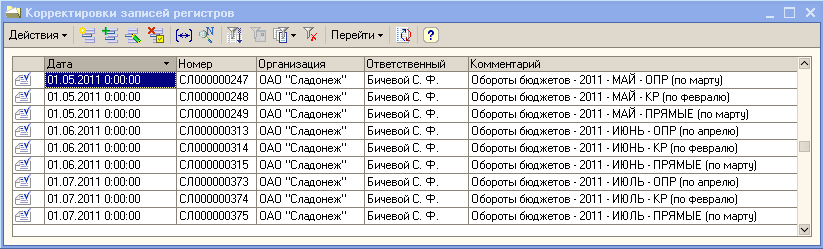
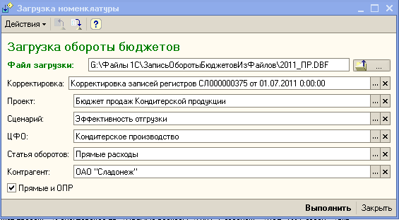

Документы корректировка записей регистра.

В начале месяца, как правило данные из планового не предоставлены, взять 3 пред. файла (см. по ответственому (Бичевой)), скопировать, изменить дату, время, провести. Если данные старые, комментарий в скобках не менять, изменить только месяц - Обороты бюджетов - 2011 - АВГУСТ - ОПР (по апрелю)
Обработка лежит в папке G:\Файлы 1С\ЗаписьОборотыБюджетовИзФайлов\ЗаписьОборотыБюджетовИзФайлов.epf
В присланом файле отключить групировки, удалить лишние столбцы, переименовать, привести к виду пред. файлов.
Сделать копию из пред. документа, очистить и загрузить.

Настройки сверить с пред. документом.
После загрузки переключить активность с помощью кнопки
[14:27:16] <АСУ Неборский О.С. - 1219><АСУ Бичевой С.Ф.-1227>
\\SERVSH\Shared\АСУ\Неборский\MyDoc_Толя\РАБОЧИЕ ДОКУМЕНТЫ\Обработки_Волков\ЗаписьОборотыБюджетовИзФайлов
Прямые грузяться из документов "Установка цен номенклатуры" по номерам присланым экономистами. Зайти в док. вывести табл. часть в список (поля: артикул, номенклатура, плановая себестоимость), скопировать и вставить в новый док. Excel, сохранить. В случае если данные нужны из нескольких док., убедиться что нет повторов. В комент. прописать месяц по дате документа (01/09/2011 - сентябрь). Далее как и предыдущие.